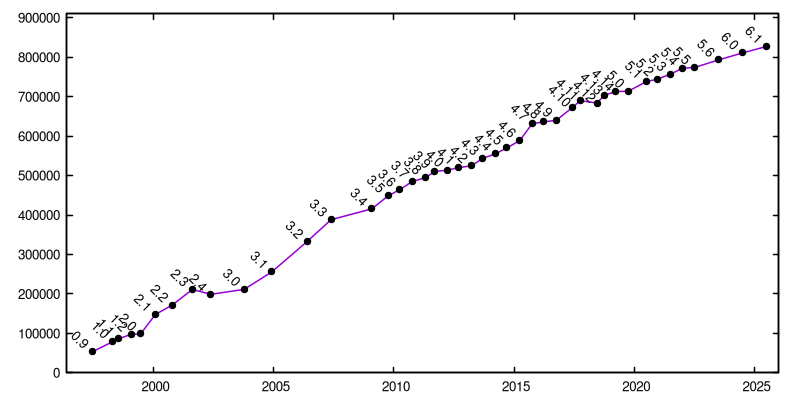

{% include JB/setup %}

<div class="row">
  <div class="col-md-4">
    <ul>
 <li><a href="https://raw.githubusercontent.com/CGAL/cgal/master/Installation/CHANGES">global changelog</a> </li>
 {% for post in site.tags['release'] %}
        {% capture this_day %}{{ post.date | date: "%d" }}{% endcapture %}
        {% capture this_year %}{{ post.date | date: "%Y" }}{% endcapture %}
        {% capture this_month %}{{ post.date | date: "%B" }}{% endcapture %}

        {% comment %} always print the first entry, only print following
        entries if they are not betas, this is a little convoluted since
        we have no better way to negate contains statements
        {% endcomment %}

        {% if forloop.first %}
        <li><a href="{{ BASE_PATH }}{{post.url}}" class="active">{{post.title}}</a> ({{this_month}} {{this_year}})</li>
        {% elsif post.title contains "beta" %}
        {% else %}
        <li><a href="{{ BASE_PATH }}{{post.url}}" class="active">{{post.title}}</a> ({{this_month}} {{this_year}})</li>
        {% endif %}
      {% endfor %}
    </ul>
  </div>
  <div class="col-md-8">
    
    <caption align=BOTTOM>Number of lines of code of CGAL (using <a href="http://www.dwheeler.com/sloccount/"> David A. Wheeler's 'SLOCCount'</a>, restricted to the <code>include/CGAL/</code> and <code>src/</code> directories).
    </caption>

    <p>The manual of an old release X.Y can still be accessed at
    <tt>http://doc.cgal.org/Manual/X.Y/doc_html/cgal_manual/packages.html</tt>
    </p>
  </div>
</div>
